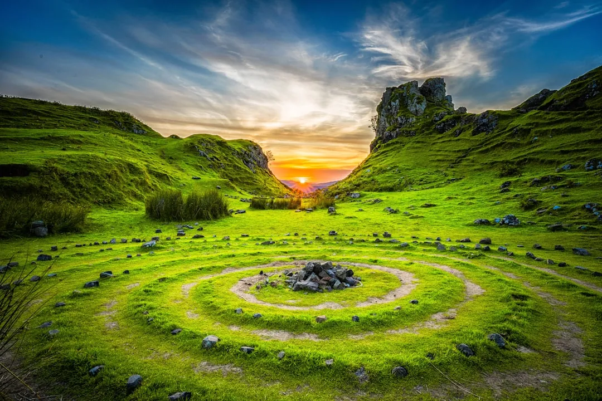

5-night and 7-night California golf itineraries
· By GoldenPath Guide Editorial Team
California is too large for a single golf base. San Diego sits about 120 miles south of Los Angeles, Monterey sits about 300 miles north of it, and Palm Springs sits 100 miles east in the desert. Pick one base per trip, play it well, and save the other regions for the next visit. Drivers who try to cover the whole state in a week spend the trip on freeways.
The schedules below assume international or cross-country arrival with one travel day on each end. A 5-night trip means 7 days door to door with 3 to 4 rounds. A 7-night trip means 9 days door to door with 5 to 6 rounds. Both include at least one full rest day, because walking hilly coastal courses on consecutive days wears down most golfers over 50.
The golden rules for any length
Limit the trip to one region plus at most one transfer day. Monterey pairs with Santa Cruz and San Francisco, San Diego stands alone, and Palm Springs pairs with nothing because the desert courses deserve full days. Every inter-region move in California costs 5 to 7 hours with traffic, which is a round of golf thrown away.
Book the hardest tee time before anything else, then build lodging and flights around it. Weekend mornings at Torrey Pines South and resort-guest windows at Pebble Beach decide the whole calendar. Morning tee times beat afternoon ones on coastal courses, since the marine layer burns off by 10 a.m. and the wind rises after 2 p.m.
- One region per trip keeps driving under 90 minutes a day and protects morning tee times.
- Three to four rounds fit a 5-night trip, and five to six rounds fit a 7-night trip without exhaustion.
- A rest day in the middle protects both scores and backs, especially on walking courses.
- Arrive a full day before the first important round to absorb flight delays and jet lag.
5-night, 7-day plan: Monterey base
Fly into San Jose or San Francisco, drive about 90 minutes to Monterey, and settle in. Day 1 is arrival and the 17-Mile Drive at sunset, no golf. Day 2 brings the first round at Spyglass Hill or Bayonet, teeing off after 9 a.m. so the marine layer has lifted.
Day 3 is the anchor round at Pebble Beach Golf Links, booked as early as the window allows. Day 4 is a rest day in Carmel and the Monterey Bay Aquarium, which sits on Cannery Row about 15 minutes from most Peninsula lodging. Day 5 closes with a second round, either a Pebble Beach replay or Spanish Bay, followed by the bagpiper ceremony at sunset. Day 6 drives back to the airport, and day 7 flies home.
5-night, 7-day plan: San Diego base
Fly into San Diego, where Torrey Pines sits about 20 minutes north of downtown La Jolla. Day 1 is arrival plus an evening walk on the public bluff trails above the course, which are free and open to everyone. Day 2 is the North course, the gentler introduction with the same ocean views.

Day 3 is the South course, the championship test and the round the whole trip is built around. Day 4 rests in Balboa Park or La Jolla Cove, both within 25 minutes of most golf lodging. Day 5 adds a third round at a county course such as Maderas or Aviara, about 30 to 45 minutes north, before a farewell dinner in the Gaslamp Quarter. Day 6 and 7 are return travel.
7-night, 9-day plan: desert plus coast
Nine days allow two bases with one transfer day between them. Start with four nights in Palm Springs, where winter highs sit in the 65 to 75 degree range and more than 100 courses operate within a 30-minute drive. Play the PGA West Stadium Course on day 2, rest or play an resort course on day 3, and play a second desert round on day 4.
Day 5 transfers to San Diego, roughly a 2.5 to 3-hour drive west, with an afternoon arrival and no golf. Days 6 and 7 cover Torrey Pines North and South in that order, day 8 rests at the beach or the zoo, and day 9 flies home from San Diego. This order works because desert golf is flat and cart-friendly, saving legs for the walking-heavy bluffs courses.
Round counts and pacing by fitness
Golfers under 40 with carts can handle 36 holes in a day on flat desert tracks, and many do. Walking golfers and anyone over 55 should treat 18 holes as the full day, since Torrey Pines and Spyglass Hill each involve real elevation change. Senior groups consistently report better trips with a 2-1 rhythm: two golf days, one rest day, repeated.
Twilight rounds look tempting for squeezing in extra holes, but winter sunsets in San Diego fall around 5 p.m. and in Monterey closer to 5:30 p.m. A 2 p.m. twilight start in December often ends in darkness around the 15th hole. Book twilight only between April and September, or accept a 12-hole evening.
What to lock first, in order
- Anchor tee time first: Pebble Beach, Torrey Pines South weekend, or Stadium Course prime morning.
- Flights into the nearest airport: Monterey needs San Jose, San Diego needs SAN, desert needs PSP.
- Lodging within 30 minutes of the anchor course, since dawn drives ruin morning rounds.
- Rental car with room for four golf travel bags if the group has four players.
- Remaining tee times, restaurant reservations, and one rest-day activity, in that order.
Two trips beat one mega-trip every time. Play the south this year and the north next year, and California stops feeling rushed and starts feeling familiar.
Monterey Golf
Torrey Pines: South & North
Palm Springs & Desert Golf
Road Trip